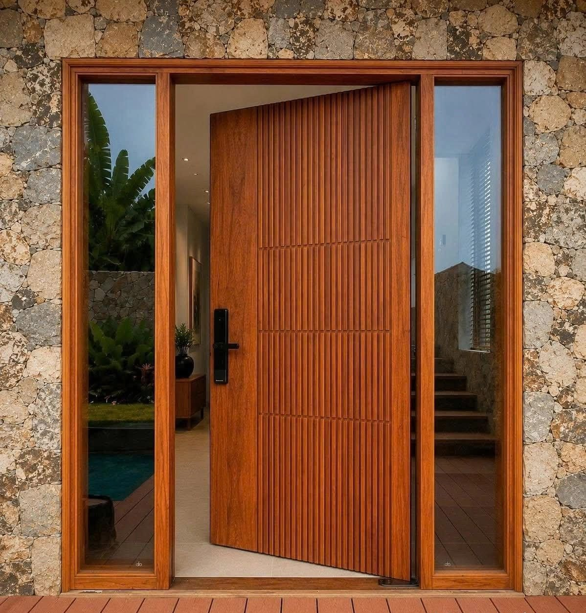
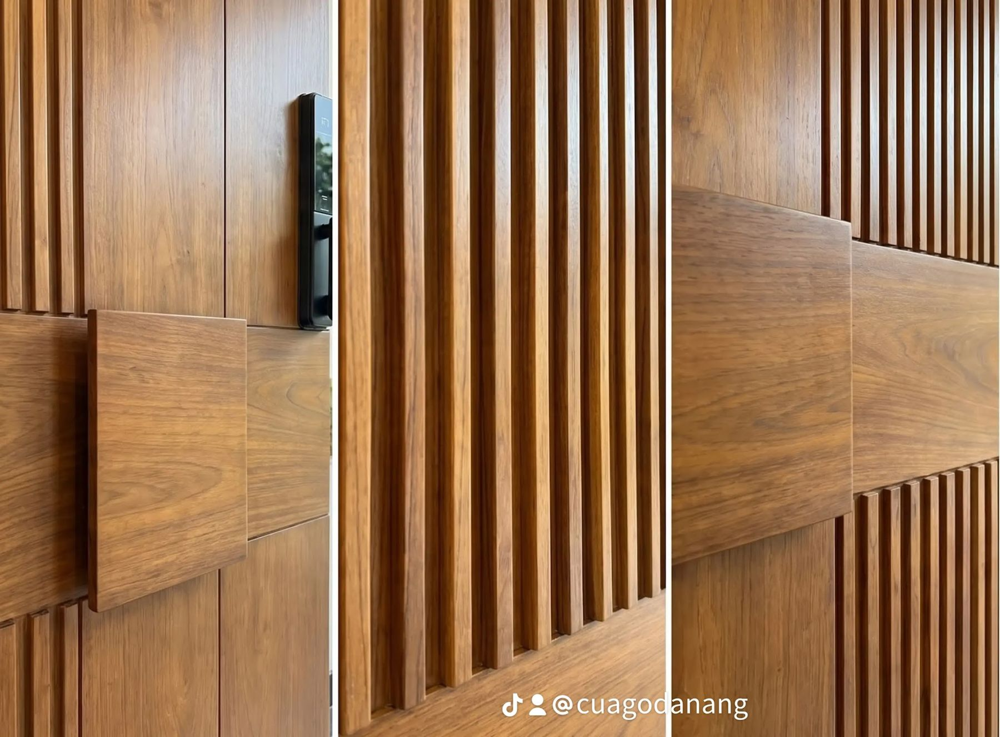
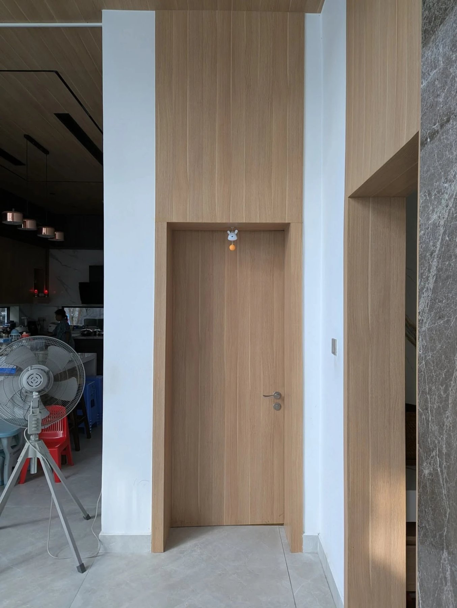
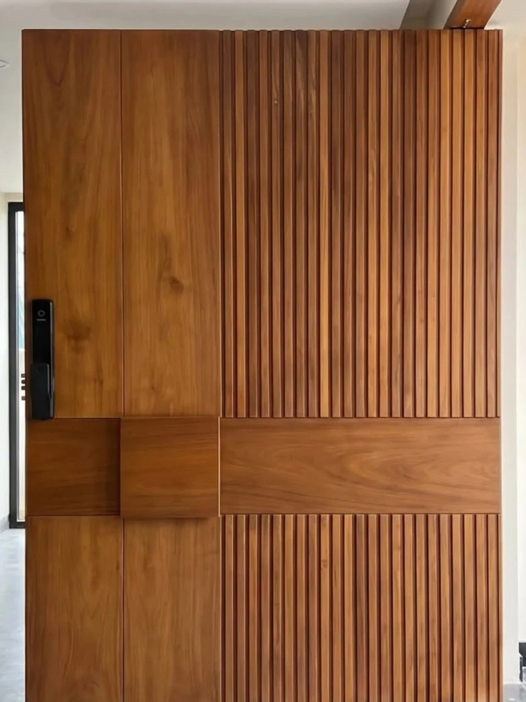
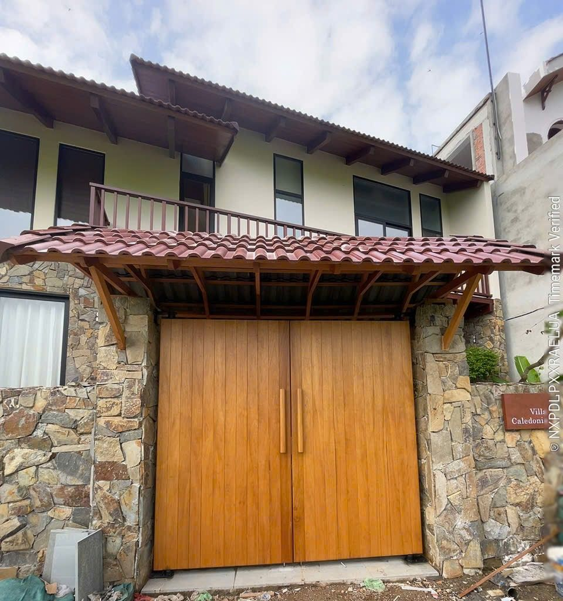

Cửa chính
Một bộ cửa, tám chi tiết.
Bộ cửa đi vào nhà không chỉ là cánh gỗ. Đó là khung bao, cánh chính, cánh phụ, kính, bản lề, chốt, tay nắm và khoá — được thiết kế cùng nhau theo đúng ô cửa của ngôi nhà bạn.
Kiểu cửa
Chọn cách cửa mở theo mặt tiền và lối đi.
01
Một cánh
Ô cửa 0,9–1,2m. Gọn, phù hợp nhà phố, căn hộ.
02
Hai cánh đều
Ô cửa 1,6–2m. Cân đối, trang trọng cho villa.
03
Mẹ – con ô kính
Cánh lớn đi lại hằng ngày, cánh nhỏ có kính lấy sáng, mở khi cần.
04
Xoay trục
Bản lề sàn đặt lệch tâm, cánh lớn xoay hai chiều. Ấn tượng, hiện đại.
05
Lùa kính khung gỗ
Khung Teak 40mm, kính cường lực 8mm, ray giảm chấn hai chiều.
Cấu tạo
Giải phẫu bộ cửa mẹ – con gỗ Teak
Bấm vào từng bộ phận trên hình hoặc trong danh sách để xem chi tiết.
Vật liệu
Gỗ thật, phụ kiện thật.
Một bộ cửa đẹp sau mười năm phụ thuộc vào thứ bên trong: loại gỗ, lớp sơn và những chiếc bản lề không ai nhìn thấy.
Gỗ cho cửa chính
Chúng tôi ưu tiên gỗ Teak cho mọi bộ cửa chính.

Gỗ Teak
Cửa chính đứng ngoài nắng mưa, đóng mở hàng nghìn lần mỗi năm. Teak là loại gỗ chịu được điều đó tốt nhất trong các loại gỗ chúng tôi làm.
- Chịu thời tiết
- Hàm lượng dầu tự nhiên cao, chống ẩm, chống mối mọt, ít nứt khi nắng nóng.
- Ổn định
- Co ngót thấp, cánh lớn 55mm ít cong vênh — phù hợp cửa xoay trục khổ lớn.
- Thẩm mỹ
- Vân thẳng, màu nâu vàng ấm, càng dùng càng lên màu đẹp.
- Dễ gia công
- Soi rãnh, phay hoa văn, ghép lam sắc nét; bám sơn PU tốt.
- Lưu ý
- Giá cao hơn gỗ thông dụng; khổ gỗ dài trên 2,7m có hạn — chúng tôi sẽ tư vấn phương án chia ô hoặc ghép.
Các loại gỗ khác
So sánh nhanh ưu và nhược điểm.
Phù hợp cho cửa phòng, cửa trong nhà hoặc khi bạn muốn một phong cách riêng.
| Loại gỗ | Ưu điểm | Nhược điểm | Phù hợp |
|---|---|---|---|
| Óc chó | Nâu sẫm sang trọng, vân uốn lượn đẹp, ổn định | Giá rất cao, chủ yếu nhập khẩu; nhạt màu nếu nắng chiếu trực tiếp | Cửa phòng, nội thất cao cấp |
| Sồi | Cứng, chịu lực tốt, vân sáng màu, giá hợp lý | Dễ co ngót nếu sấy chưa kỹ; kém chịu nước khi ở ngoài trời | Cửa phòng, cửa trong nhà |
| Lim | Rất cứng và bền, chống mối mọt tốt | Rất nặng, cần bản lề tải lớn; màu sẫm dần; nguồn gỗ hạn chế | Cửa phong cách truyền thống |
| Gõ đỏ | Vân hoa đẹp, màu đỏ nâu sang trọng, bền | Giá cao, nặng, nguồn hạn chế | Cửa chính phong cách cổ điển |
| Hương | Mùi thơm nhẹ, vân sắc nét, bền | Giá cao; màu đậm, khó phối nội thất hiện đại | Cửa, đồ thờ |
| Gụ | Thớ mịn, ổn định, dễ chạm khắc | Giá khá cao, nguồn hạn chế | Cửa chạm khắc, phong cách cổ điển |
| Kiền kiền | Chắc, chịu lực và chịu ẩm khá, giá hợp lý | Vân kém nổi, màu không đều, khá nặng | Khung bao, cửa phụ |
| Xoan đào | Nhẹ, dễ gia công, giá mềm, màu hồng nâu đẹp | Độ cứng trung bình, dễ trầy, kém bền ngoài trời | Cửa phòng, nội thất |
| Thông | Giá rẻ, nhẹ, màu sáng | Mềm, dễ trầy, nhiều mắt gỗ; không khuyến nghị cho cửa chính | Nội thất phong cách Bắc Âu |

Hoàn thiện
Sơn PU giữ vân gỗ, chống ẩm và tia UV.
Bề mặt được chà nhám nhiều lớp, lót và phủ PU trong phòng sơn kín tại xưởng. Có thể chọn mờ, bán bóng hoặc giữ màu gỗ tự nhiên.
Phụ kiện
Phụ kiện chính hãng, ghi rõ mã trong báo giá.
Bản lề sàn
Imundex 708.16.120 inox mờ, tải 120kg + phụ kiện cửa gỗ 708.46.030.
Bản lề âm
Imundex 701.46.550, đen mờ, giấu hoàn toàn khi đóng.
Chốt âm
Hammered HMR 016SS-24", dài 600mm, cho cánh phụ.
Tay nắm
Thanh đứng H800 kim loại, hoặc gỗ Teak PU đồng bộ.
Cửa lùa
Bánh xe giảm chấn 2 chiều tải 60kg HMR 824Y-2, ray HMR 8289, khoá tay âm HMR 653.
Kính
Kính cường lực 8–10mm cho ô kính cánh phụ và cửa lùa.
Kích thước
Mỗi bộ cửa bắt đầu từ một bản vẽ.
Kỹ thuật viên đo ô cửa thực tế, dựng bản vẽ 3D trên SketchUp và thống nhất từng chi tiết với chủ nhà trước khi xuống xưởng.
| Kiểu cửa | Kích thước thường gặp (mm) |
|---|---|
| Mẹ – con ô kính | 2000 × 2700 · cánh 1560 + 340 |
| Hai cánh đều | 1800 × 2900 |
| Một cánh / xoay trục | 1600 × 2350 |
| Lùa 4 cánh kính | 2050 × 1700 |
Cánh cao trên 2,7m cần kiểm tra khổ gỗ Teak sẵn có — chúng tôi sẽ tư vấn phương án chia ô hoặc ghép phù hợp.
Kích thước Lỗ Ban
Ô cửa lọt lòng rơi vào cung tốt của thước 52,2cm.
Với cửa đi, cửa sổ, cửa cổng, kích thước được tính theo khoảng thông thủy (lọt lòng, lọt gió) — phần trống còn lại sau khi trừ khung bao — và đo bằng thước Lỗ Ban 52,2cm (522mm). Ví dụ cửa phòng phủ bì 910 × 2200mm, trừ khung còn thông thủy 810 × 2150mm: rộng 810 rơi cung Tiến bửu, cao 2150 rơi cung Thông minh — cả hai đều tốt. Cửa phòng vệ sinh theo quan niệm không cần áp.
Nhập số hoặc kéo thước: thước rộng kéo sang trái / phải, thước cao kéo lên / xuống. Vạch cam ở giữa là kích thước đang đo. Hình cửa vẽ theo đúng tỉ lệ rộng × cao bạn chọn.
| Cung lớn | Trong mỗi chu kỳ 522mm | 5 cung nhỏ |
|---|
Thước lặp lại mỗi 522mm: lấy kích thước (mm) chia cho 522, phần dư cho biết rơi vào cung nào. Mỗi cung lớn dài 65,25mm, chia 5 cung nhỏ 13,05mm. Thước Lỗ Ban là quan niệm dân gian, có nhiều loại thước khác nhau; chúng tôi dùng loại thông dụng nhất. Bếp, bậc dùng thước 429mm; bàn thờ, tủ dùng thước 388mm.
Quy trình
Sáu bước từ ô tường trống đến bộ cửa hoàn chỉnh.
Khảo sát
Đo ô cửa, xem hướng mở, độ dày tường và phong cách mặt tiền.
Bản vẽ 3D
Dựng phối cảnh trên SketchUp, chọn hoa văn, kính, phụ kiện.
Báo giá chi tiết
Bảng BOQ liệt kê từng hạng mục, rõ vật liệu và mã phụ kiện.
Sản xuất
Gia công tại xưởng Đà Nẵng, sơn PU trong phòng sơn.
Lắp đặt
Đội thợ lắp khung, cánh, bản lề sàn, khoá và cân chỉnh.
Bảo hành
Giấy bảo hành SUNFLOWER cho từng công trình.
Các loại cửa khác
Đồng bộ cả ngôi nhà.



Bạn đã có kích thước ô cửa?
Gửi kích thước và ảnh mặt tiền, chúng tôi gửi lại bản vẽ và báo giá chi tiết từng hạng mục.
Nhận báo giá